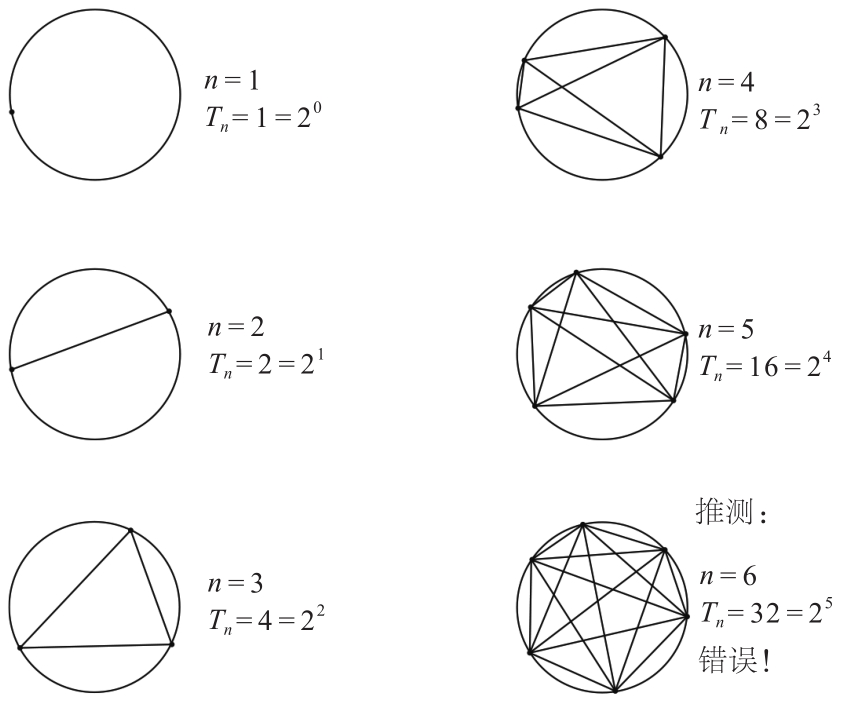
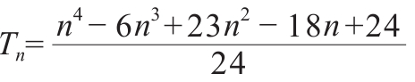

数学是永恒的学科。其他学科的新一代研究人员总会将之前研究的一些成果进行综合，之后再进行研究。而数学并非如此，一旦一个数学定理被证明，那么它将永远存在，且永远为真。毕达哥拉斯定理已经有2000多年的历史，但是仍然完美无缺，它一经证明便永远地成为真理，再也没有失效过。
相应地，对数学定理的证明要求也是绝对的。在法庭上，如果一个事实“不存在任何合理的怀疑”，那么这个事实就会作为真相得到认可，但是在数学界这种证明方法还远远不行。接下来的这个例子展示了为什么数学家必须如此严格地对待数学定理，而不能只用个别情况（虽然有可能那个数字很大）验证一条普遍的定理。
假设一个圆的周长上有n个随机的点，每个点都与其余的点以线段相连，圆内任意三条线段不相交于同一点，整个圆的面积被这些线段分成了大小不一的部分。假设Tn为这些部分的数量，那么Tn究竟有多大？
为了解答这个问题，我们首先要计算一下前五种特殊情况，即n=1到n=5。前五种情况中Tn的值都是2的幂数，即2（n－1）。据此，人们可以对Tn的值提出一个假说：一般地，Tn的值是2的幂数。这个结论初看时没有问题，但是这个猜想其实是错误的。Tn的值并不是2的幂数，而是一个最高次为4的多项式。当n=6时，结果并不是25=32，而是31！

正确的公式：

更妙的例子在下面：
论断：如果我们将1、2、3等自然数依次代入方程313（x3+y3）=z3中，等式不成立，因此此方程没有自然数解。然而，这一论断是错误的。如果要推翻这一论断，我并不建议大家去寻找一个反例，因为使这个等式成立的未知数的最小自然数解比101000还要大。而这个反例不能通过电脑模拟出来，只能利用数论知识进行推导，最终确定结果。